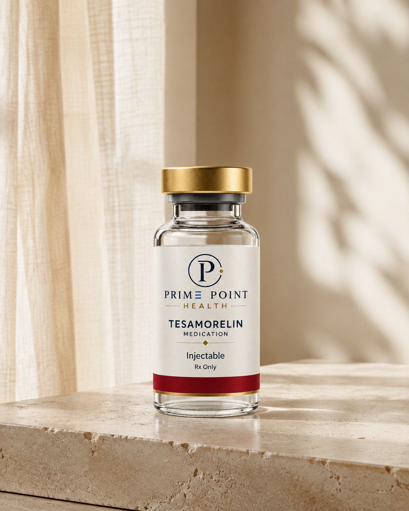

Reduces
visceral fat
It lowers excess fat stored around internal organs in the abdomen in adults with HIV-associated lipodystrophy.

Product illustration. Actual packaging may vary.
Metabolic Health
Starting from $249 $277 10% off
A prescription peptide and growth-hormone-releasing hormone (GHRH) analog used to reduce excess deep belly (visceral) fat in adults with HIV-associated lipodystrophy.
Prescription only when clinically appropriate. Eligibility and results vary.
Tesamorelin is a synthetic analog of growth hormone-releasing factor. The FDA-approved product has a specific use: reducing excess abdominal fat in adults with HIV-associated lipodystrophy. It is not indicated for general weight-loss management.
Tesamorelin acts on the pituitary gland to stimulate growth hormone release and increases insulin-like growth factor 1 (IGF-1). A clinician evaluates whether this pathway is appropriate for a patient and what monitoring may be needed.
Visceral Fat Reduction: Egrifta SV and Egrifta WR are FDA-approved tesamorelin products used to reduce excess visceral abdominal fat around internal organs in adults with HIV-associated lipodystrophy.
Targeted Action: In studies of adults with HIV-associated lipodystrophy, tesamorelin reduced visceral adipose tissue while largely preserving subcutaneous fat and supporting lean body mass. It is not indicated for general weight-loss management.
Physiologic Signaling: By binding to GHRH receptors, tesamorelin stimulates the pituitary gland to release the body's own growth hormone, supporting its natural pulsatile pattern rather than supplying synthetic HGH directly.
It lowers excess fat stored around internal organs in the abdomen in adults with HIV-associated lipodystrophy.
It acts as a growth hormone-releasing hormone (GHRH) analog, signaling the pituitary gland to release the body's own growth hormone.
It targets visceral fat while generally preserving subcutaneous fat and lean body mass.

The Prime Point quality standard
Before medication reaches a Prime Point patient, it is supported by a layered quality process designed to verify what is inside, protect its purity, and hold every pharmacy partner to a consistently high standard.
We test for potency to ensure every medication contains the correct concentration of active ingredients.
We ensure our pharmacy partners test for sterility so medications are free of foreign organisms, pathogens, and bacteria.
We test for endotoxicity to confirm medications adhere to established endotoxin safety recommendations.
Every medication is independently third-party tested, and every pharmacy is rigorously vetted before any partnership begins.
Tesamorelin may be appropriate for certain adults seeking physician-guided support for excess visceral abdominal fat, but it is not suitable for everyone or intended as a general weight-loss medication. A licensed provider will review your health history, current medications, goals, glucose levels, and relevant lab work to determine whether treatment is appropriate. Tesamorelin should not be used during pregnancy or by individuals with an active cancer or certain pituitary conditions.
Tesamorelin stimulates the body’s natural production of growth hormone and may help reduce visceral fat—the deeper abdominal fat surrounding the internal organs—while supporting a healthier body composition. Benefits vary by individual, and tesamorelin is not intended for general weight loss or as a replacement for healthy nutrition and exercise. Treatment should include physician oversight and ongoing monitoring of glucose and IGF-1 levels.
After you're approved for treatment, you'll be billed according to the plan you select. Your medication is shipped directly to your door in discreet packaging with complimentary shipping. Vials are shipped on an expedited basis. Refills are processed automatically, and you can pause or cancel your subscription at any time.
When prescribed as a subcutaneous injection, Tesamorelin is administered into the fatty tissue beneath the skin. Follow the dose, route, and administration instructions provided by your licensed clinician and dispensing pharmacy.
No. Insurance is not required for Tesamorelin. Prime Point Health accepts credit cards and offers pay-over-time plans for added flexibility.